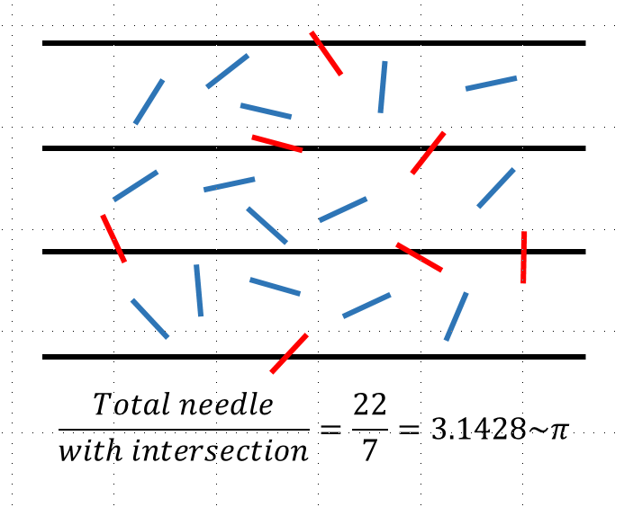
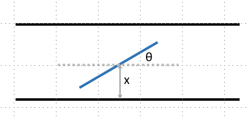
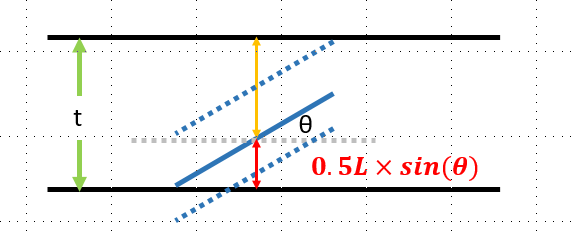

投針問題，就是在一個等間距的平行線當中，隨意投擲些許長度恰好為間距一半的針，使這些針隨機散落在平行線之間。可以發現到這些針有部分會和平行線相交，有的則恰好落在平行線之間而沒有相交。有趣的事情是，經過統計可以發現，平面上針的總數和有相交的針數的比值恰好為圓周率$\pi$呢! 而且隨著樣本數的增加，比值會更加地逼近圓周率$\pi$。(原命題 註解1)
這個問題早在1777年就由法國Buffon(生物、數學、天文學家)所提出，有關更多他的故事可以參考註解2。然而18世紀就提出的needle problem卻同時隱含著大量的科學觀念，例如統計(statistic)、隨機(random)、微積分(calculus)、甚至蒙地卡羅演算法(Montecaro Algorithm)的基本概念也在這個問題當中能展現。
在處理這個問題之前，我們先簡單模擬並想像這個實驗是怎麼運作的吧! 首先我們在畫好等間距t的平行線撒下N個長度為L的針，使之以任意的位置，任意的角度散落在平面當中。(使用t,L代數配合wikipidea使用變數 註解3)。For convenience, 我們可以簡化我們平行線的數量，我們只考慮兩條平行線間的狀況即可，moreover，我們可以發現在兩條平行線之間系統上下對稱，透過一些處理(鏡射)可以把系統簡化成許多針一條平行線的系統。 接者，我們可以以兩個變數：''質心距離平行線距離, x''，''needle 角度, $\theta$''，去描述每個針和平行線相交的可能性。且藉由對稱性我們可以只考慮變數x範圍(0$\mathrm{<}$x$\mathrm{<}$t/2)，且needle角度範圍(0$\mathrm{<}$ $\theta$$\mathrm{<}$$\pi$/2)。

在分析之前我們先把問題拆成兩種，一種為短針(short needle case, L$\mathrm{<}$t)、另外一種是長針(Long needle case,L$\mathrm{>}$t)，因為兩種討論模式不同所以要分開討論。
1: 短針(L$\mathrm{<}$t)
我們可以知道質心距離平行線越遠越難碰到平行線，但是仍然可以藉由調整角度去試著碰到平行線，''\textit{也就是說不同質心距離會擁有不同碰到平行線的機率}''，而我們的目標是把所有不同質心的距離所對應的機率通通加總並平均得到整體統計的機率。假設我們丟針先決定針的角度$\theta$，則針的頂點所能延伸靠近平行線的距離為L/2*sin(theta)，而質心在L/2*sin(theta)時指針皆會和平行線有交點，而當質心大於L/2*sin(theta)則不會有交點。若是質心是隨機分布在長度t的任意位置，則x恰好落在L/2*sin(theta)的機率就是(L*sin(theta))/2t。因此我們就得到不同角度下，指針能和平行線相交的機率，接者我們要把不同角度的機率全部加權合併成整個系統的機率，或是期望值(expectation value)

由先前的討論我們可以知道我們的角度區間是落在(0$\mathrm{<}$ $\theta$$\mathrm{<}$$\pi$/2)之間，也就是說在隨機的狀態下每個角度選到的機率就是$\pi$/2的倒數2/$\pi$，因此我們的期望值就是出現比例(2/$\pi$)乘上相交機率(P(theta))，把所有加總，利用積分可以得到：
\[P'(\theta )=\sum^{\frac{\pi }{2}}_{n=0}{n\times p\left(\theta \right)}=\int^{\theta =\frac{\pi }{2}}_{\theta =0}{\frac{2}{\pi }\times \frac{{\frac{L}{2}\times sin \left(\theta \right)\ }}{t}d\theta }=\frac{L}{\pi t}\int^{\theta =\frac{\pi }{2}}_{\theta =0}{sin\theta \ d\theta }=\frac{L}{\pi t}\]
由圖可以發現當質心移到上方也會有交點，所以我們的期望值要再乘以2
因此
\[P\left(\theta \right)=\frac{2L}{\pi t}\]
這個就是在短針情形下，散落針數交點的機率，若是定t=2L，表示針的長度是平行線的一半，則有P=1/pi，此即為我們在圖一所演示的結果。而此假設實驗也可以用程式模擬完成，由於我程式很爛所以有找到網路上別人完成的結果，很酷!請參考註解4(滿有趣的大家可以點進去看看)。
1: 長針(L$\mathrm{>}$t)
長針所要考慮的狀況就和上面不同了，因為如果針太長，你會馬上發現有些角度下會卡住沒辦法塞到平行線之間，因此我們要更仔細去計算所有的機率。
現在我們考慮質心在x的位置，在角度delta恰巧能碰到平行線，並且我們由三角函數關係知道delta=arcsin(2x/L)，而且比此角度更大的範圍(最大至pi/2)皆能碰到平行線(圖三)，而角度落在此區間(粉紅色區域)的機率則是(($\pi$/2)-arcsin(2x/L))/ ($\pi$/2))(eq. 4)，因此我們也得到了一個不同質心位置x，和平行線相交的機率的函數。最後跟短針類似的作法，把所有的位置x(區間0$\mathrm{\sim}$t/2)不同的機率全部加總就可以得到
\[P\left(\theta \right)=\frac{2}{t}\int^{x=\frac{t}{2}}_{x=0}{\frac{(\ \frac{\pi }{2}-{{sin}^{-1} \left(\frac{2x}{L}\right)\ }}{\frac{\pi }{2}}}dx\]
\[=\frac{4}{\pi t}\left(\int^{x=\frac{t}{2}}_{x=0}{\ \frac{\pi }{2}-{{sin}^{-1} \left(\frac{2x}{L}\right)\ }}dx\right)\]
\[=\frac{4}{\pi t}\left(\frac{\pi t}{4}-\frac{L}{2}\int^{\eta =\frac{t}{L}}_{\eta =0}{\ {{sin}^{-1} \left(\eta \right)\ }}d\eta \right)=1-\frac{L}{2}{\left.\left(\eta {{sin}^{-1} \eta +\sqrt{1-{\eta }^2}\ }\right)\right|}^{\eta =\frac{t}{L}}_{\eta =0}\]
\[=1-\frac{2L}{t\pi }(\frac{t}{L}{{sin}^{-1} \frac{t}{L}+\sqrt{1-{\left(\frac{t}{L}\right)}^2}\ }-1)\]
這個公式就是在Wikipedia當中的for long needle case的解。後記：雖然說這個問題很古老，但是他所隱含的許多統計、隨機的觀念是十分可貴的，此外隨者計算機科學的進步，利用python也可以非常容易地做出這個問題的模擬，也可以發現算出來的答案確實收斂在圓周率$\pi$。若是不會打程式，也可以用實際動手做做看實驗，看看實驗結果是否和理論相同呢?
生活中很多事情看起來很簡單，但是如果你認真思考，他會比你想像中的有料...
by professor KP. If you treat it simple, it will become easy; If you treat it serious, it will become meaningful.
1: Suppose we have a floor made of parallel strips of wood, each the same width, and we drop a needle onto the floor. What is the probability that the needle will lie across a line between two strips?
2: https://pansci.asia/archives/1651453
3: https://en.wikipedia.org/wiki/Buffon\%27s\_needle\_problem
4. https://mste.illinois.edu/activity/buffon/